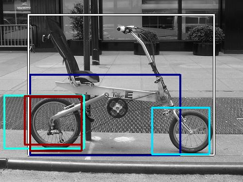
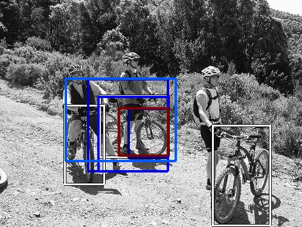
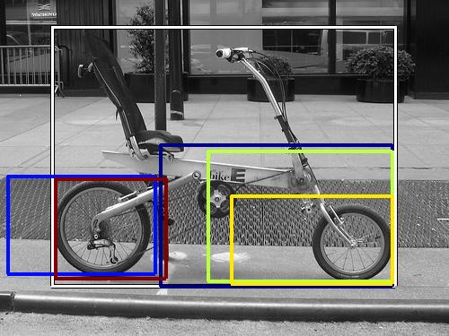

0.467098

0.469936

0.484840

0.520981

0.522619

0.555521

0.556087

0.580892

0.581430

0.587413
| Target image | 0.467098 | 0.469936 | 0.484840 | 0.520981 | 0.522619 | 0.555521 | 0.556087 | 0.580892 | 0.581430 | 0.587413 |
Target image |  10806.530273 |  8162.591309 |  7798.144043 |  5512.841797 |  5374.132812 |  4601.197754 |  3997.213623 |  3873.398438 |  2875.503906 |  2545.275635 |
Target image |  10382.991211 |  9001.638672 |  8070.928223 |  7519.965332 |  5440.442871 |  5372.085938 |  4607.330566 |  4499.298828 |  3979.272949 |  3260.040527 |
Target image |  9999.815430 |  8075.196289 |  6916.056641 |  6301.773438 |  5263.542480 |  5216.670410 |  5075.411621 |  4649.271973 |  4319.193848 |  3750.847412 |
Target image |  9120.949219 |  9103.990234 |  9017.725586 |  7072.076660 |  5220.379395 |  4919.295898 |  4620.261230 |  4311.501465 |  4186.618652 |  3659.524658 |